CBS 저작툴 고도화 전략
어떤 콘텐츠든 3분 안에
CBS에서 제작하고 관리할 수 있게 한다.
Contents Bank System · 2026
목차
-
1CBS 저작툴 현황 (As-is)범용 저작툴 · 동적 콘텐츠 저작툴 · iBook 편집기
-
2현재 서비스의 Pain Point 분석현행 저작환경의 한계 및 개선 필요성
-
3타사 벤치마킹Canva · 미리캔버스 · Genspark.ai
-
4고도화 전략 (To-be)벡터 DB 연계 · 자연어 기반 편집 UI
-
5기대효과 (궁극적인 지향점)생산성 향상 · 에듀테크 마켓 진입
-
AAppendix. 구축 상세 플랜
CBS 저작툴 현황
비상교육 CBS에는 콘텐츠 유형과 저작 방식에 따라
3가지 타입의 저작툴을 탑재하여 하이브리드형 저작환경을 구축함
범용 저작툴
교과급 및 과목별 개념 / 문항 / 활동 콘텐츠를 저작
동적 콘텐츠 저작툴
트리거-액션 기반의 복잡도 높은 조작형 콘텐츠를 저작
iBook 편집기
eBook 편집에 최적화된 전용 편집 기능 제공

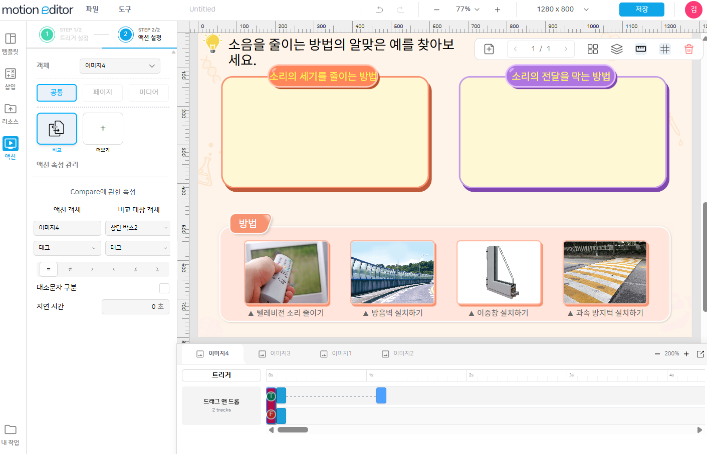
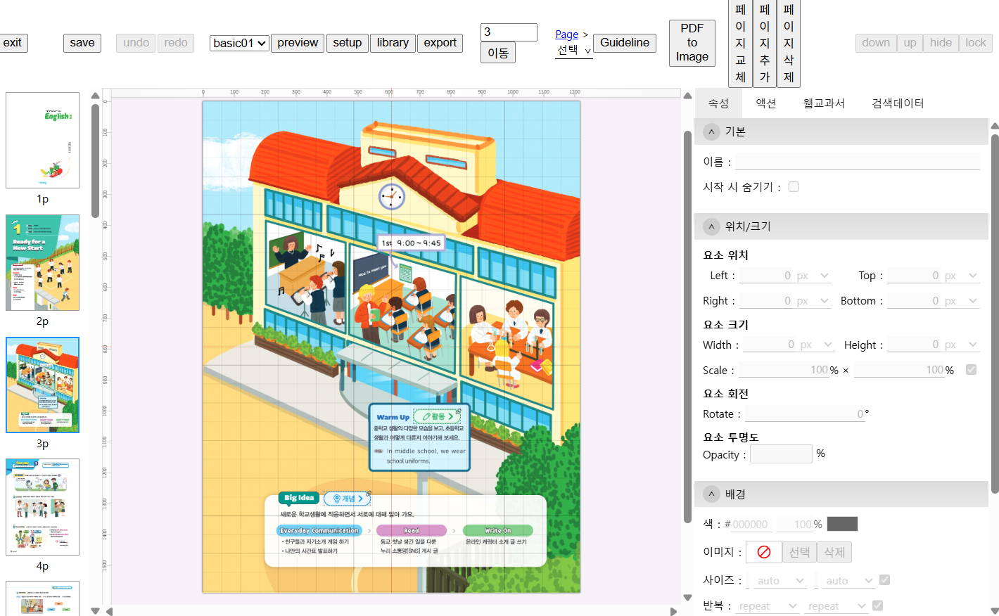
CBS 저작툴 현황 › 범용 저작툴
안정적 운영 콘텐츠 제작 & 관리
비상교육 내 다양한 브랜드에서 제공되는
개념/문항/활동 콘텐츠를 안정적으로 제작하고 관리함
메타정보 교육과정 표준체계 태깅
모든 콘텐츠는 교육부의 교육과정 표준체계에 따라 정교하게 태깅됨
교육과정 / 교과과정 / 평가영역 / 학습맵 / 난이도 / 해시태그
AI 엔진 자동화 기능 탑재
- OCR 디지털라이징 — 페이퍼 기반 문항 자동 변환
- 유사문항 생성 — 진단 및 추천학습 지원
- 힌트/해설 자동생성 — 문항별 학습 보조
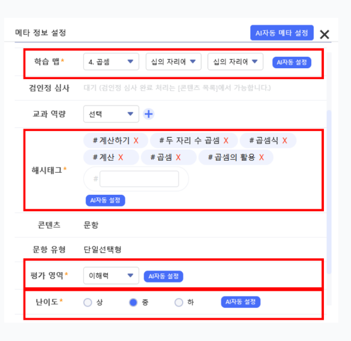
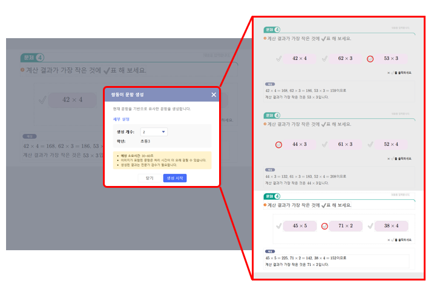

CBS 저작툴 현황 › 동적 콘텐츠 저작툴
트리거-액션 기반 조작형 콘텐츠 저작
복잡한 코딩 없이 트리거-액션 기반(예: 버튼 클릭 시 모션 실행)의
직관적인 로직으로 복잡도 높은 조작형 콘텐츠를 생산하기 위해 구축된 저작툴임
1차 구축 완료 25년 11월
- 오브젝트 생성 및 배치
- 애니메이션 및 모션 적용
- 미리보기 뷰어 및 내보내기
구축 배경: 조작형 콘텐츠의 외주 의존도가 높고,
사후 유지보수에 많은 공수가 드는 문제점을 해결하기 위해 구축됨
현재 서비스의 Pain Point 분석
1) 범용 저작툴
✓ 강점: 교과급 및 과목별 광범위한 템플릿의 콘텐츠를 빠르게 양산하는 데 최적화됨
✗ Pain: 너무 많은 기능을 수행하다 보니 입문자가 플랫폼에 온보딩하여 전체 기능을 파악하는 데 높은 학습 비용이 발생함
2) 동적 콘텐츠 저작툴
✓ 강점: 별도의 코딩 없이 콘텐츠 저작자가 트리거-액션 기반의 조작형 콘텐츠를 생산하고 편집하는 데 최적화됨
✗ Pain: 객체 및 모션을 생성하는 UI가 입문자에게 다소 어렵게 느껴질 수 있음
3) AX 트렌드 대응 필요
AX 트렌드에 맞춰 손쉽게 콘텐츠를 제작하고 기존 콘텐츠를 재활용할 수 있는 방안을 마련하여 경쟁력을 제고해야 함
Insight
'빈 화면'에서 시작하는 기존 방식에서 탈피하여, 기 구축된 방대한 콘텐츠를 손쉽게 재활용하고 즉각적으로 재생산할 수 있는 지능형 방안 도입이 필수
타사 벤치마킹
AI 저작 프로세스
프롬프트 입력 · PDF업로드 · 옵션값(분량·디자인·용도 등) 입력
→ AI생성 콘텐츠 개요 확인 → 산출물 확인
주요 특징
- 입력값에 기반한 추천 콘텐츠 제공
- 타사 대비 AI 산출물(초벌 콘텐츠)의 퀄리티나 다양성이 높지 않음
- 편집화면에서 프롬프트 기반 편집이 불가함
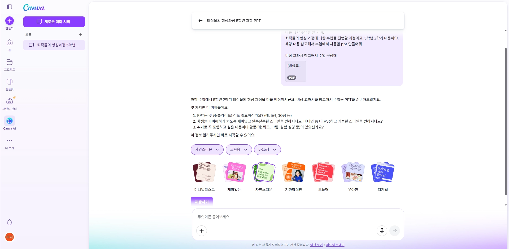
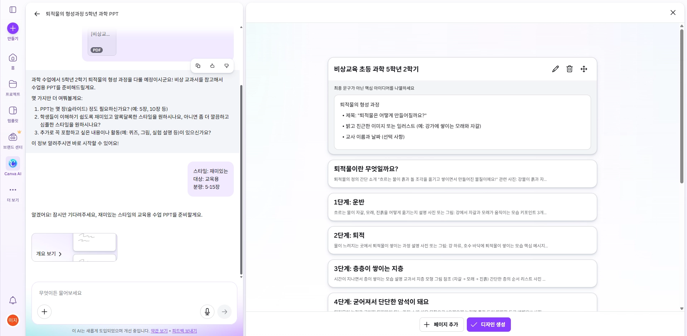
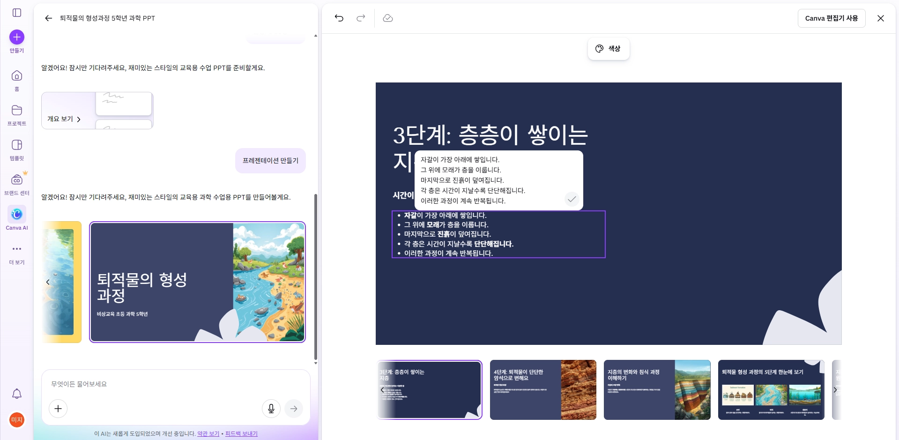
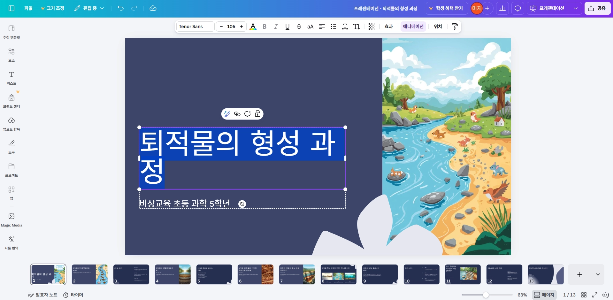
AI 저작 프로세스
프롬프트 입력 · 옵션값(페이지수, 목적, 청자, 말투 등) 입력
→ AI 생성 콘텐츠 개요확인 → 추천 템플릿 선택 → 산출물 확인
주요 특징
- 사용자 편의에 맞춘 기본 프롬프트 설정 제공
- 입력값에 기반한 추천 콘텐츠 제공
- 다양한 PPT 레이아웃 제공
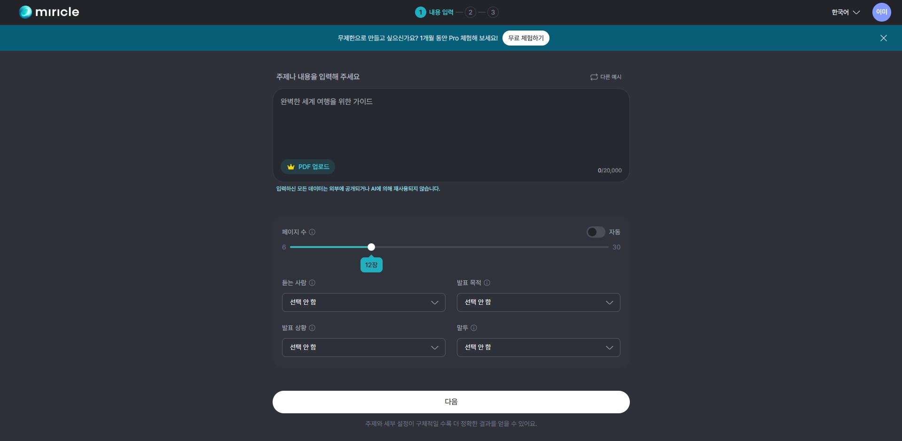
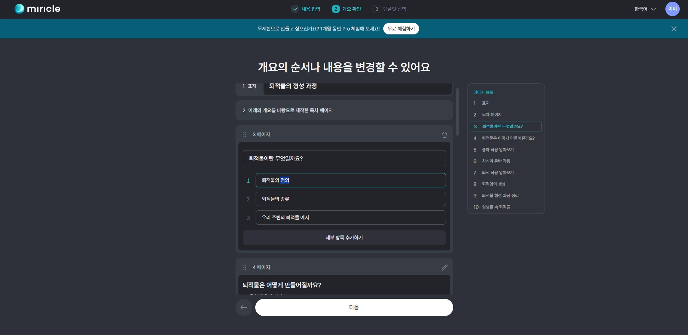
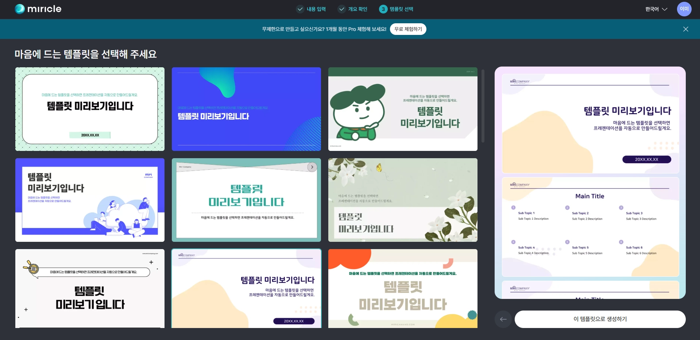
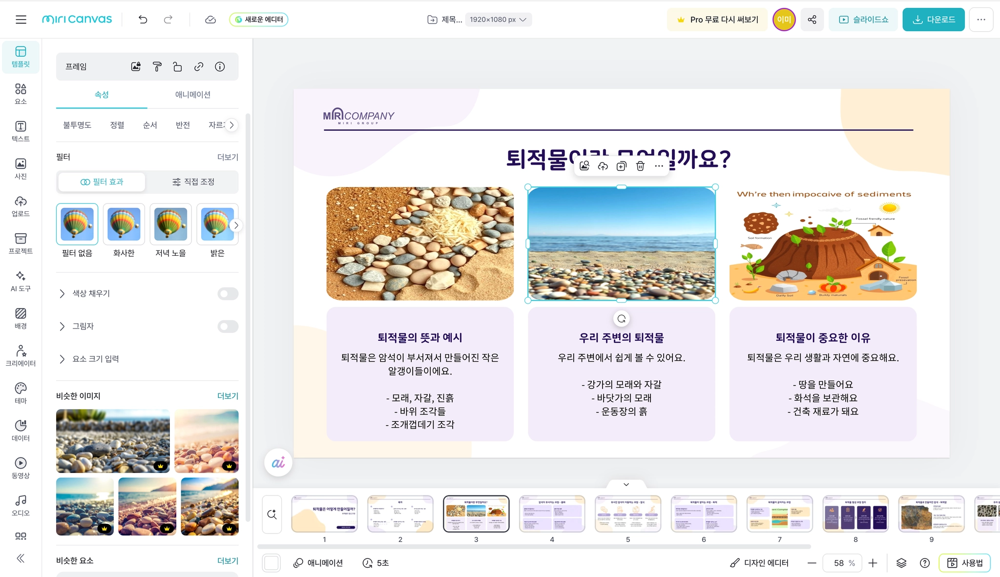
AI 저작 프로세스
프롬프트 입력 → AI 생성 산출물 확인 및 편집
주요 특징
- AI 생성 콘텐츠에 대한 팩트 체크 기능 제공
- AI/프롬프트/수동 편집 등 다양한 옵션 제공
- 프롬프트 기반 편집과 수동 편집 모두 지원
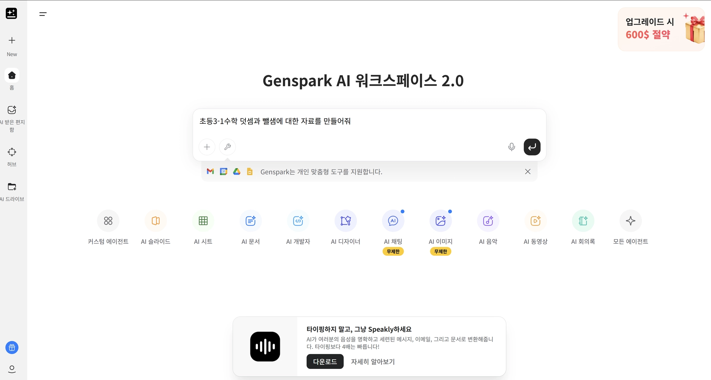
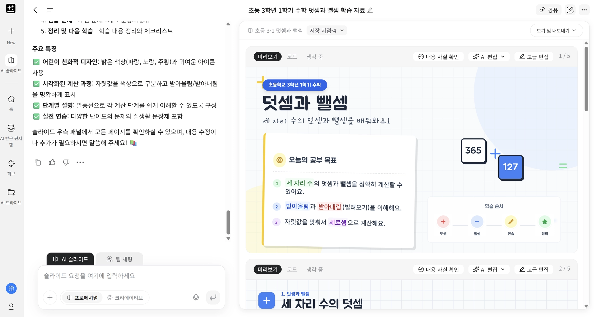
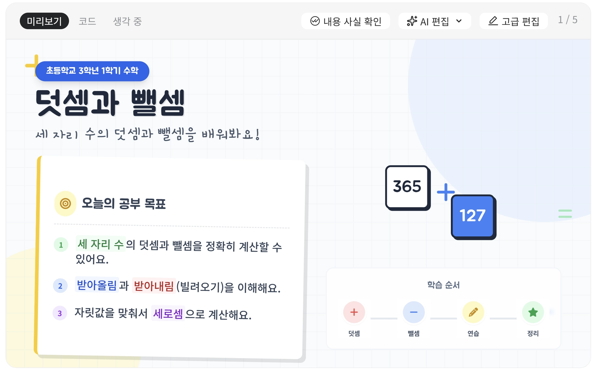
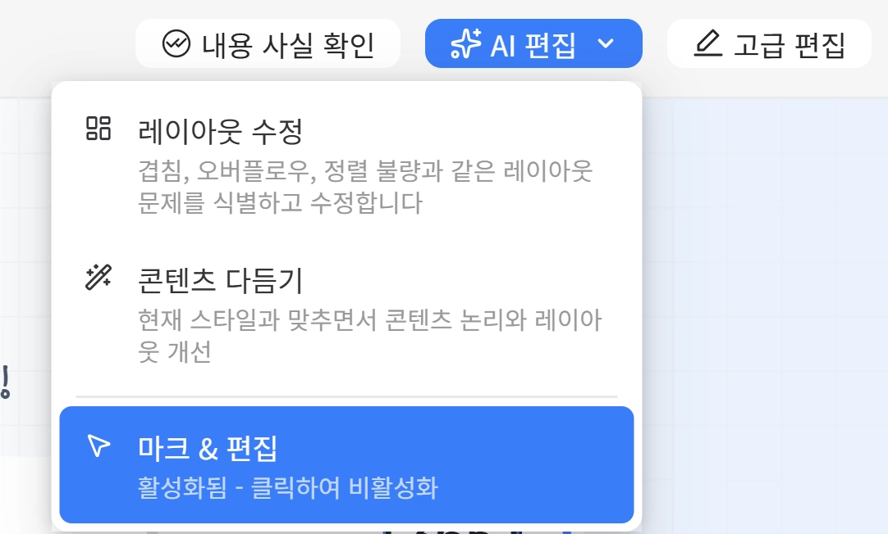
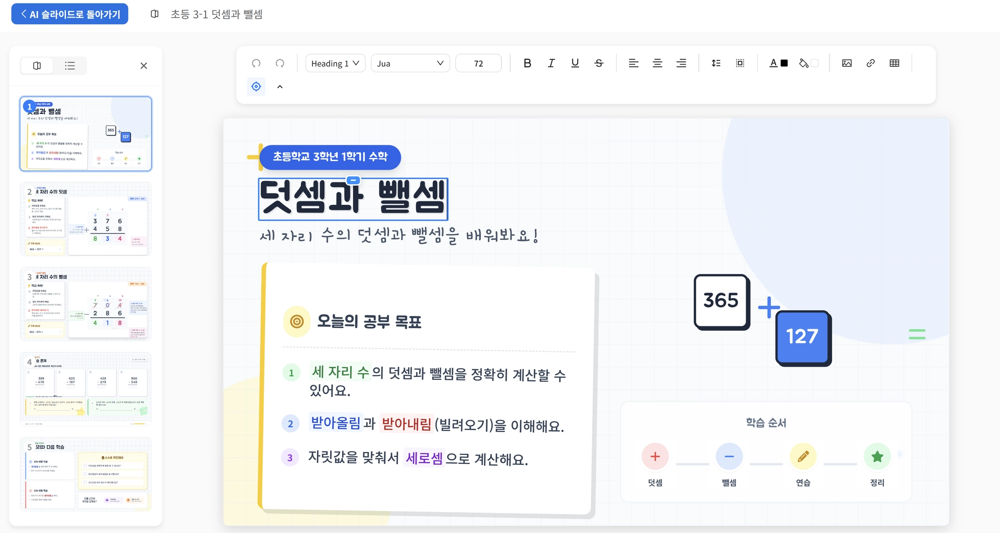
고도화 전략 (To-be)
AI 기반 저작 프로세스 혁신
벡터 DB + 자연어 프롬프트로 누구나 쉽고 빠르게 콘텐츠를 완성
벡터 DB 연계 초벌 콘텐츠 제안
CBS의 방대한 DB를 벡터화한 V사이트와 연계하여,
AI가 추론한 최적의 초벌 콘텐츠를 자동 제안함
벡터 DB란? 비정형 데이터를 벡터(임베딩)로 저장해
의미 기반 검색과 유사성 분석을 빠르게 수행하는 데이터베이스
자연어 기반 편집 UI 구축
자연어 프롬프트 기반으로 콘텐츠를 생성하고
편집까지 한 번에 할 수 있는 사용자 친화적인 UI를 구축함
메타정보 설정
템플릿 유형, 난이도,
교과, 학년 선택
프롬프트 입력
원하는 콘텐츠
방향 직접 입력
AI 초벌 생성
벡터 DB 기반
최적 콘텐츠 추천
대화형 편집
AI Assistance로
빠른 수정 및 보완
완성 및 내보내기
최종 검수 후
CBS에 등록
고도화 전략 › Step 1. 설정값 기반 초벌 콘텐츠 생성
저작 시작 화면 개편
저작툴 첫 화면에서 CBS 메타정보 옵션값을 선택하고 프롬프트를 직접 입력할 수 있도록 함
- 템플릿 유형 / 난이도 / 교과 / 학년 / 학교급
AI 추론 기반 콘텐츠 추천
CBS 벡터 DB를 기반으로 AI가 추론하여
가장 정확한 콘텐츠(혹은 템플릿)을 선제적으로 추천하는 방식을 도입함
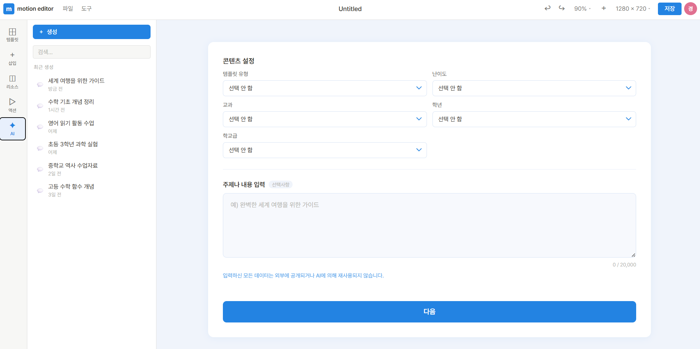
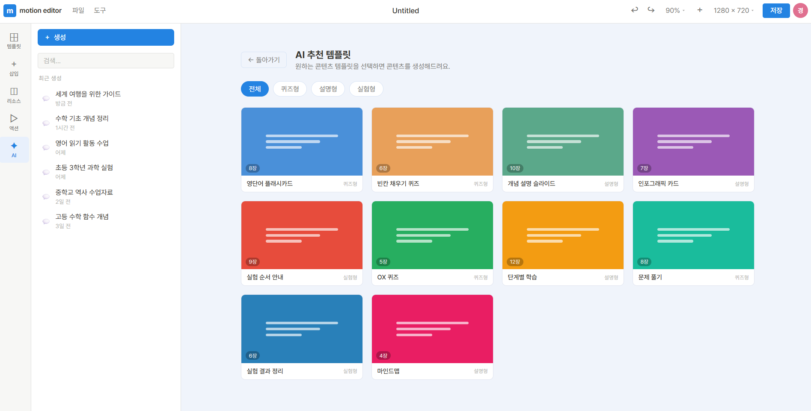
기대 효과
1) '빈 화면에 대한 공포'를 해소하고, 입문자의 진입 장벽을 완화함
2) 정교하게 선별된 DB를 제공하여 교육자료의 신뢰성을 확보하고, 익숙한 레이아웃에서 편집을 시작할 수 있음
고도화 전략 › Step 2. 대화 기반 편집 옵션 제공
대화 기반 편집
화면 이동 없이 초벌 콘텐츠에 대한 편집을 기존 저작 플로우 내에서 이어서 할 수 있도록 AI Assistance 기능을 제공함
- 동적 저작툴: 객체 및 액션 생성 메뉴에 AI 챗봇 제공
- 범용 저작툴: AI가 키워드 형식으로 커스터마이징 제안
AI 자동 편집
레이아웃, 오탈자 등을 자동 검수하여 콘텐츠 품질을 보장함
고급 편집 기능
기존 저작 방식을 그대로 제공하여 수동으로 정교한 편집이 가능하도록 함
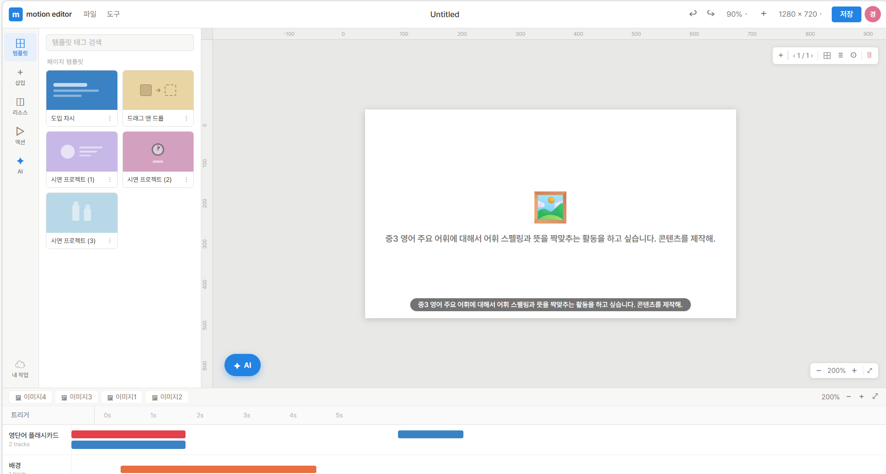
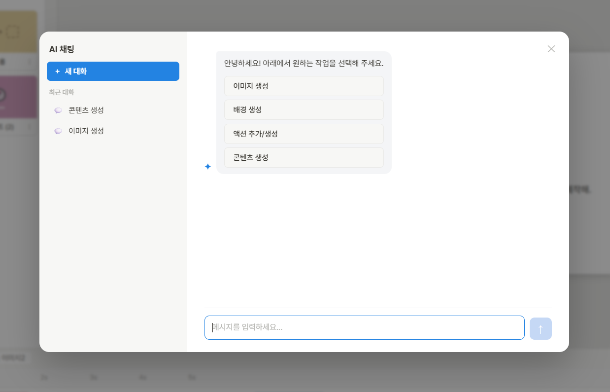
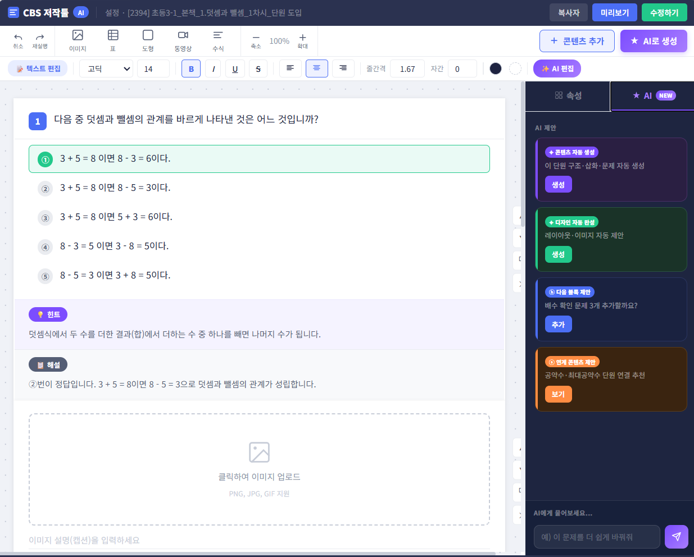
기대 효과
다양한 편집 옵션(대화형 / AI 자동 / 고급 수동)을 제공하여 저작자의 숙련도에 관계없이 최적의 편집 경험을 보장함
범용 저작툴의 한계와 자사 고도화 방향의 차별성
| 자사 CBS (To-Be) | Canva | 미리캔버스 | Genspark.ai | |
|---|---|---|---|---|
| AI 초벌 생성 | Vector DB 기반 콘텐츠 교재 맞춤형 초벌 |
단순 개요 생성 | 슬라이드 구조 자동 생성 | 슬라이드 구조 자동 생성 |
| 대화형 편집 | 인터랙션 생성 포함 측면 AI 패널 제공 |
X | X | AI 편집 슬라이드 단위 |
| 인터랙션 요소 | 트리거-액션 기반 인터랙션 콘텐츠 저작 가능 |
X | X | X |
| 에듀테크 적합성 | 교과 및 B2B/B2G 직접 진입 가능 |
범용 PPT 위주 | 교육용 강점 있음 (수동 기능 중심) |
교육용 강점 있으나 (범용 사이트로서 다소 이질감) |
Summary: 타사 대비 CBS 고도화의 핵심 차별점은
인터랙티브 콘텐츠 저작, 교육과정 표준 메타 태깅, 벡터 DB 기반 의미 검색으로, 교육 콘텐츠 전문 저작 플랫폼으로서의 고유 경쟁력을 확보함
기대효과 (궁극적인 지향점)
고효율 인하우스 생산체계
기획부터 산출물 관리까지 단일 플랫폼에서 완결하는 생산 체계를 구축하여,
외주 의존 없이 인하우스에서 고품질 콘텐츠를 빠르게 생산하고 관리함
저작 전문 플랫폼으로의 도약
비전문가(교사 등)도 쉽게 다루는 UI 구축으로 내부 활용을 넘어
공교육 에듀테크 마켓(B2B / B2G) 직접 진입의 교두보를 마련함
구축 상세 플랜
AI 기반 콘텐츠 에디터 고도화 로드맵
| 기간 | 단계 | Epic ID | 고도화 영역 | 목적 요약 | 핵심 내용 | 단계 목표 |
|---|---|---|---|---|---|---|
| 2026년 3월 | 1단계 | EP-01 | AI Assistant UI/UX 설계 | AI 인터페이스 기반 구축 | 사이드바 프롬프트 UI, 키워드 제안 UI | AI 인터페이스 진입점 확보 |
| 2026년 3월 | 1단계 | EP-02 | 대화 관리 시스템 | 대화 기반 생성 구조 구축 | 대화 이력 저장, 컨텍스트 유지, 세션 관리 | AI 작업 흐름 유지 |
| 2026년 3월 | 1단계 | EP-03 | 신규 객체 추가 방식 설계 | 객체 생성 구조 표준화 | 객체 생성 파이프라인, 객체 스키마 정의 | 객체 생성 구조 확립 |
| 2026년 4월 | 2단계 | EP-04 | AI 콘텐츠 생성 엔진 구축 | AI 생성 실행 구조 구축 | 프롬프트 파싱, 의도 분석, 명령 실행 | AI 생성 기능 구현 |
| 2026년 4월 | 2단계 | EP-05 | CBS 데이터 연동 | 동적 콘텐츠 생성 지원 | DB 연동 API, 객체 삽입 로직 | 데이터 기반 콘텐츠 생성 |
| 2026년 4월 | 2단계 | EP-06 | JS Function 고도화 | 실행 구조 표준화 | 함수 인터페이스 표준화, 파라미터 구조화 | 실행 기반 안정화 |
| 2026년 5월 | 3단계 | EP-07 | 액션 시스템 LLM 연동 (1차) | 인터랙션 생성 지원 | 자연어 → 트리거/액션 매핑 | 인터랙션 생성 가능 |
| 2026년 5월 | 3단계 | EP-08 | AI 엔진 고도화 | 생성 품질 향상 | 수정, 재생성, 피드백 반영 | 생성 안정성 확보 |
| 2026년 6월 | 4단계 | EP-10 | 편집 화면 UI/UX 통합 | 생성 및 편집 환경 통합 | AI 패널 + 편집 패널 통합 | 통합 제작 환경 구축 |
| 2026년 6월 | 4단계 | EP-11 | 액션 시스템 고도화 (2차) | 고급 인터랙션 지원 | 조건부 액션, 시퀀스 액션 | 고급 인터랙션 생성 |
| 2026년 7월 | 5단계 | EP-13 | 편집 UX 개선 | 제작 효율 향상 | 단축키, 자동완성, 스마트 제안 | 제작 속도 향상 |
| 2026년 7월 | 5단계 | EP-14 | AI 응답 최적화 | 응답 성능 개선 | 캐싱, 스트리밍 응답, 프롬프트 최적화 | 응답 속도 개선 |
| 2026년 7월 | 5단계 | EP-15 | 에러 핸들링 고도화 | 시스템 안정성 확보 | 롤백, 복구, 오류 안내 | 안정적인 사용 환경 확보 |
| 2026년 8월 | 6단계 | EP-16 | 시스템 통합 테스트 | 서비스 검증 | E2E 테스트, 성능 테스트 | 전체 시스템 검증 |
| 2026년 8월 | 6단계 | EP-17 | 문서화 및 교육 자료 | 사용자 온보딩 | 사용자 가이드, 튜토리얼, 문서 | 사용자 교육 준비 |
| 2026년 8월 | 6단계 | EP-18 | 운영 모니터링 구축 | 운영 환경 구축 | 로깅, 모니터링, 알림 시스템 | 서비스 운영 준비 |